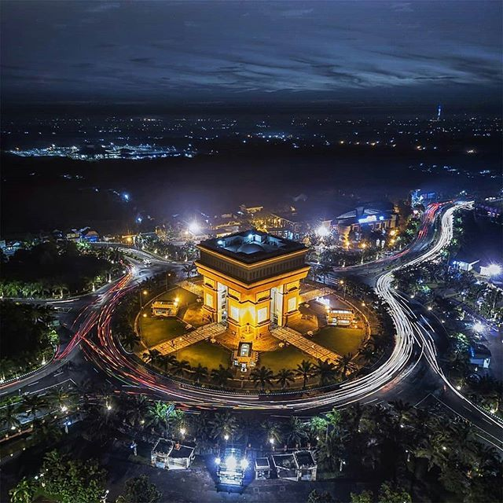

Gumul
Gumul merupakan salah satu iconik dari Kota Kediri yang tidak bisa dilupakan, mengapa demikian karena jika datang ke Kediri tanpa mengunjungi salah satu icon ini terasa kurang jika berkunjung di Kota ini. Maka bagi para wisatawan jangan lupa untuk menikmati kemegahan bangunan yang merupakan titik bertemunya 5 jalur yang berbeda untuk pergi ke semua arah. Rasa hembusan angin yang kencang merupakan salah satu kesukaan para wisatawan jika berada di Gumul. Suasana Simpang Lima Gumul yang paling asik adalah waktu malam hari karena wisatawan akan dimanjakan lukisan disisi Gumul yang indah.